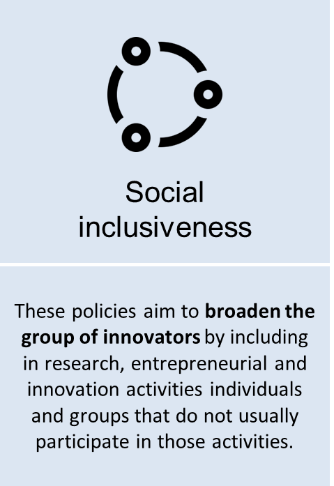
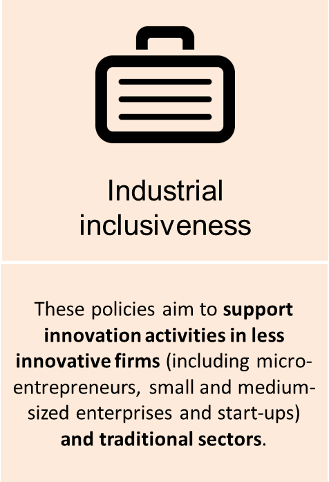
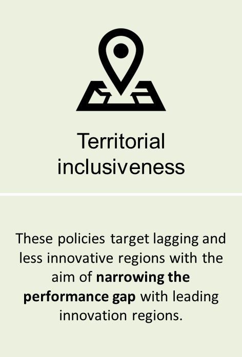
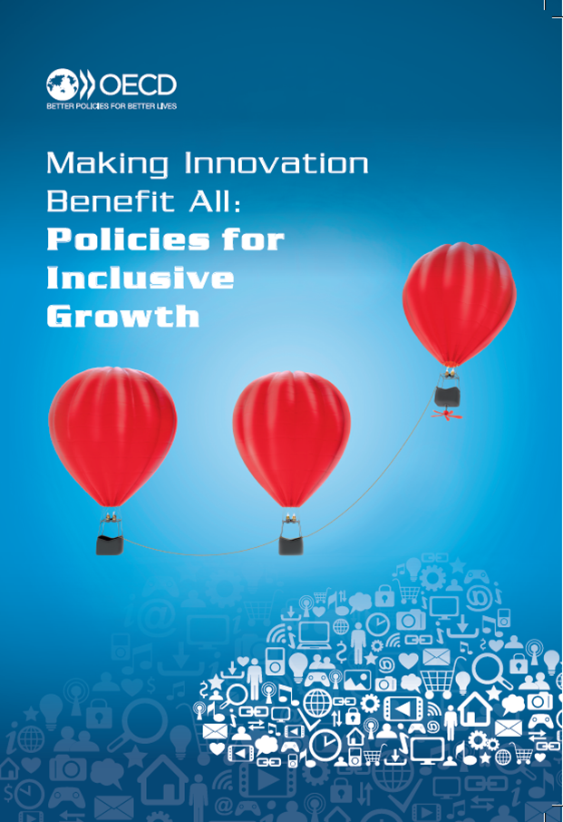

Inclusive Innovation Policy Toolkit
The OECD’s Inclusive Innovation Policy Toolkit is a practical and interactive guide developed to aid policy makers design and implement effective innovation policies for inclusive growth. It provides a set of examples of inclusive innovation policies implemented in different countries. Find more information here [1].
The contents of this toolkit are based on Planes-Satorra, S. and C. Paunov (2017) "Inclusive Innovation Policies: Lessons from International Case Studies", OECD Science, Technology and Industry Working Papers, No. 2017/02, OECD Publishing, Paris.
Inclusive innovation policies are defined as innovation policies that aim to remove barriers to the participation of under-represented individuals, social groups, firms, sectors and regions in innovation, research and entrepreneurship activities. Their goal is that all segments of society have opportunities to successfully participate in and benefit from innovation. They contribute explicitly to one or more of the following objectives:
|  [6] |  [7] |  [8] |
The toolkit gathers 33 detailed case studies of inclusive innovation policies from 15 countries as well as two cross-country programmes. This toolkit has been designed to guide you through countries' policy initiatives. You may search policy cases by:
• inclusiveness type [9]
• main policy objective [10]
• type of challenge encountered during policy implementation [11]
• country [12]
Each page focuses on a specific topic and provides a range of sub-topics for you to choose from. By clicking on the sub-topic of your choice, the toolkit will help you narrow down your search and guide you towards those cases that are of most interest to you. Each page also presents a range of materials (e.g. background information, statistics, etc.) that directly relate to the specific topic of search.
You can also find ALL THE POLICY CASES here [12].
The policy toolkit has been developed as part of the OECD Innovation for Inclusive Growth project [13]. Each policy case study gathers detailed information about policy objectives and main implementation rationales; the characteristics of the policy instruments implemented; and an overview of the implementation challenges faced as well as actions taken to address them. The information was gathered by conducting detailed interviews and information exchange with country authorities in charge of these policies.
|  [14] |
The policy cases presented in this toolkit informed the OECD report |